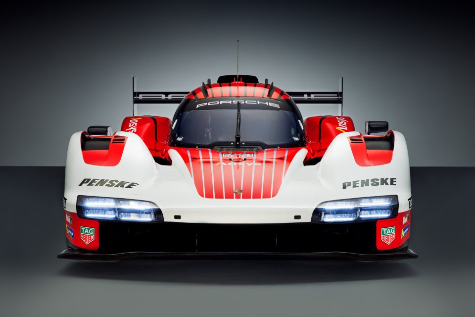

Tham vọng năm 2030 của Porsche: Hơn 80% xe mới là xe thuần điện
Stuttgart. Trong năm qua, Porsche AG đã xác lập vị thế là một trong những nhà sản xuất ô tô có lợi nhuận cao nhất. Nhà sản xuất xe thể thao Stuttgart đạt những con số cao nhất trong lịch sử ở cả doanh thu và lợi nhuận kinh doanh. Doanh thu năm 2021 đạt 33,1 tỷ EUR, cao hơn 4,4 tỷ EUR so với năm trước (28,7 tỷ EUR) và đạt mức tăng trưởng 15%. Lợi nhuận từ hoạt động kinh doanh đạt 5,3 tỷ EUR, cao hơn 1,1 tỷ EUR so với năm trước, đạt mức tăng trưởng 27%. Porsche tạo ra tỷ số lợi nhuận trên doanh thu 16% (so với con số 14,6% của năm trước). “Kết quả kinh doanh tích cực của chúng tôi đến từ những quyết định can đảm, tiên phong và luôn hướng tới tương lai,” ông Oliver Blume, Chủ tịch Hội đồng Quản Trị Porsche AG chia sẻ. “Ngành công nghiệp của chúng tôi đang trải qua giai đoạn chuyển đổi lớn nhất trong lịch sử”, ông Blume nói. “Chúng tôi đặt ra lộ trình chiến lược từ rất sớm và vận hành chúng một cách hiệu quả. Thành công này đến từ sự gắn kết của cả tổ chức.” Lutz Meschke, Phó Chủ tịch Hội đồng Quản trị phụ trách Tài chính và Công nghệ Thông tin, cho rằng những con số ấn tượng này đến từ cấu trúc chi phí hiệu quả của Porsche AG bên cạnh dải sản phẩm hấp dẫn: “Kết quả này phản ánh khả năng kinh doanh hiệu quả của công ty. Các số liệu thể hiện sự tăng trưởng tạo ra giá trị và mô hình kinh doanh thành công, dù trong những điều kiện khó khăn như sự thiếu hụt chất bán dẫn.” Dòng tiền thuần tăng trưởng từ 1,5 tỷ EUR lên mức 3,7 tỷ EUR trong năm 2021 (so với 2,2 tỷ EUR của năm trước). “Chỉ số này cũng cho thấy bằng chứng ấn tượng: Porsche đang ở một vị thế rất tốt,” ông Lutz Meschke nói. Sự phát triển tích cực cũng nằm trong chiến lược tăng trưởng lợi nhuận đầy tham vọng đến năm 2025. Chương trình này được thiết kế để sinh lợi nhuận bền vững từ những sáng kiến và mô hình kinh doanh mới. Theo ông Meschke: “Nhờ đội ngũ nhân viên luôn duy trì tinh thần làm việc ở mức cao, chương trình tăng trưởng lợi nhuận của chúng tôi đã thành công tốt đẹp. Porsche đồng thời gia tăng tính hiệu quả và hạ thấp điểm hòa vốn, cho phép chúng tôi có thêm nguồn lực để đầu tư vào sự phát triển của công ty trong tương lai, bất chấp tình hình kinh tế khó khăn. Chúng tôi cương quyết đầu tư vào lĩnh vực điện khí hóa, số hóa và tính bền vững. Tôi rất lạc quan rằng Porsche sẽ vượt qua giai đoạn khủng hoảng toàn cầu này một cách mạnh mẽ hơn.” Tình hình thế giới hiện nay kêu gọi sự khiêm tốn và cẩn trọng: “Porsche tiếp nhận thông tin xung đột quân sự tại Ukraine với sự quan tâm sâu sắc,” ông Oliver Blume nói. “Chúng tôi tiếp tục hy vọng những hành động thù địch mau chóng chấm dứt và nhường chỗ cho ngoại giao. Sự an toàn và sức khỏe của con người là ưu tiên hàng đầu.” Porsche AG đã quyên tặng 1 triệu EUR nhằm giúp đỡ người dân Ukraine. Mức độ ảnh hưởng của sự việc đến hoạt động kinh doanh của Porsche đang được đánh giá liên tục bởi một lực lượng đặc nhiệm. Chuỗi cung ứng cho các nhà máy của Porsche đang bị ảnh hưởng, dẫn đến việc sản xuất đúng hạn sẽ không khả thi trong một số trường hợp. “Chúng tôi đang trải qua những tháng khó khăn cả về kinh tế lẫn chính trị, tuy nhiên chúng tôi vẫn kiên định với mục tiêu chiến lược đã được định sẵn qua nhiều năm, đó là duy trì tỷ số lợi nhuận trên doanh thu ít nhất là 15% trong dài hạn,” CFO Lutz Meschke nhấn mạnh. “Lực lượng đặc nhiệm của chúng tôi đã có những giải pháp ban đầu để bảo toàn kết quả kinh doanh của công ty. Bằng cách này, chúng tôi muốn đảm bảo tiếp tục hoàn thành mục tiêu lợi nhuận đã đặt ra kể cả khi phải đối mặt với những thách thức nằm ngoài khả năng kiểm soát của chúng tôi.” Tuy nhiên trong nội bộ, Porsche đã tạo ra những điều kiện thuận lợi cho một mô hình kinh doanh thành công: “Về mặt chiến lược, vận hành và tài chính, Porsche đang ở một vị thế ấn tượng. Do đó, chúng tôi tự tin nhìn về tương lai và chờ đón sự kiện IPO của Porsche AG. Sự kiện này sẽ cho phép Porsche củng cố sức ảnh hưởng và gia tăng sự tự do trong kinh doanh. Bên cạnh đó, Volkswagen và Porsche có thể tiếp tục hưởng lợi từ sự hợp tác trong tương lai.” Trong năm 2021, Porsche đã giao 301.915 xe đến cho khách hàng toàn cầu. Lần đầu tiên trong lịch sử công ty, cột mốc 300.000 xe đã được vượt qua (so với 272.162 xe được giao trong năm trước). Mẫu xe bán chạy nhất là Macan (88.362 xe được giao) và Cayenne (83.071 xe). Doanh số của Taycan vượt hơn gấp đôi: 41.296 khách hàng đã nhận được mẫu xe thuần điện đầu tiên của Porsche. Kết quả này thậm chí còn vượt qua biểu tượng xe thể thao 911, mặc dù dòng xe này cũng đạt kỷ lục mới với 38.464 xe được giao. Ông Oliver Blume cho biết: “Taycan mang trọn vẹn tinh thần của Porsche và mang lại cảm hứng cho tất cả mọi người, bao gồm khách hàng hiện có và khách hàng mới, giới chuyên gia và cả báo giới. Chúng tôi đang đẩy mạnh chiến lược điện khí hóa với mẫu xe tiếp theo: Giữa thập kỷ này, chúng tôi mong muốn sẽ giới thiệu mẫu xe thể thao động cơ đặt giữa 718 với duy nhất một lựa chọn dẫn động thuần điện.” Năm ngoái, gần 40% xe Porsche mới được bán ra tại Châu Âu là các mẫu xe có trang bị động cơ plug-in hybrid hoặc thuần điện. Bên cạnh đó, Porsche đã công bố kế hoạch trung hòa carbon trước năm 2030. “Trong năm 2025, một nửa xe Porsche mới được bán ra sẽ là các mẫu xe điện,” ông Oliver Blume công bố. “Trong năm 2030, tỷ lệ xe mới được trang bị hệ dẫn động điện sẽ nhiều hơn 80%.” Để đạt được những mục tiêu đầy tham vọng này, Porsche đang đầu tư các trạm sạc cao cấp cùng với các đối tác cũng như tại hệ thống hạ tầng riêng của hãng. Danh mục đầu tư tăng cường cũng đang được tập trung vào các công nghệ cốt lõi như các hệ thống pin và quy trình sản xuất mô-đun sạc. Tập đoàn Cellforce Group vừa được thành lập đang phát triển và sản xuất các cell pin hiệu suất cao, sẵn sàng cho việc sản xuất thương mại, dự kiến trước năm 2024. Năm 2021, Porsche tăng trưởng doanh số tại tất cả các thị trường trên toàn cầu. Một lần nữa, Trung Quốc là thị trường độc lập đạt doanh số cao nhất với hơn 96.000 xe được giao, tăng trưởng 8% so với cùng kỳ năm 2020. Porsche cũng tăng trưởng nhanh ở thị trường Bắc Mỹ: Tại Mỹ, doanh số tăng trưởng mạnh mẽ 22%, với hơn 70.000 xe được giao. Sự tăng trưởng tích cực khác cũng được ghi nhận ở Châu Âu: Tại Đức, Porsche tăng trưởng 9% với gần 29.000 xe được giao đến khách hàng.

Tin Tức

Porsche AG đầu tư cổ phần vào sản xuất vật liệu pin đổi mới
" > " Porsche AG đầu tư cổ phần vào sản xuất vật liệu pin đổi mới Stuttgart. Porsche tiên phong trong chiến lược phát triển và sản xuất pin hiệu suất cao: nhà sản xuất xe thể thao đang mua lại cổ phần của Group14 Technologies ... "
Hành trình toàn cầu của Porsche Penske Motorsport với nguyên mẫu 963 mới
" Đội đua Porsche Penske Motorsport sử dụng mẫu xe Porsche 963 mới để tranh tài trong các giải đua sức bền danh giá nhất thế giới. Từ năm 2023, hai nguyên mẫu được chế tạo theo tiêu chuẩn LMDh sẽ tham gia hai giải đấu: Giải Vô Địch Sức Bền Thế Giới FIA (WEC) và Giải Vô Địch Xe Thể Thao WeatherTech IMSA. ... "

Porsche ra mắt dòng xe Taycan tại Châu Á – Thái Bình Dương
" Singapore. Hai huyền thoại, Porsche và Star Wars, hợp tác tại buổi ra mắt dòng xe thuần điện Taycan của khu vực Châu Á – Thái Bình Dương diễn ra tại Singapore vào ngày 21 tháng 11 vừa qua, trước khi dòng xe được chính thức giới thiệu tại từng thị trường vào năm 2020 ... "
Tham vọng năm 2030 của Porsche: Hơn 80% xe mới là xe thuần điện
" Stuttgart. Trong năm qua, Porsche AG đã xác lập vị thế là một trong những nhà sản xuất ô tô có lợi nhuận cao nhất. Nhà sản xuất xe thể thao Stuttgart đạt những con số cao nhất trong lịch sử ở cả doanh thu và lợi nhuận kinh doanh ... "

Porsche duy trì doanh số ổn định trong năm 2023: dòng xe 911 và Taycan tăng trưởng mạnh mẽ
" Porsche ghi nhận mức tăng trưởng mạnh mẽ trong năm tài chính 2023 và đạt mức tăng nhẹ về doanh số. Nhà sản xuất xe thể thao đã giao tổng cộng 320.221 xe trong 12 tháng của năm 2023, tăng 3% so với năm 2022 ... "